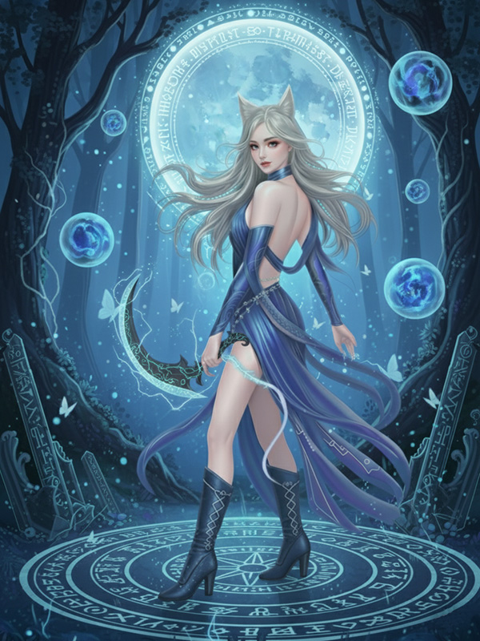

身份
狼王之女 / 月冥祭司
形态
狼女 / 人形
力量
月冥之力
“我之名，唤澜熙。若你，还记得月冥的荣耀——就跪下。”
人物解读
从野兽到神明
澜熙的故事是一场极致的蜕变。她最初以“狼女”的形态出现，充满了原始的、近乎病态的占有欲，将姜炎洺视为必须得到的“夫君”和“猎物”。然而，在生死存亡的关头，她体内潜藏的古老血脉被唤醒，从一个狂暴的野兽，蜕变为拥有神性的“月冥祭司”。这份觉醒，让她拥有了无可匹敌的力量，也让她背负上了整个族群的命运，陷入了亲情与使命的痛苦抉择。


从占有到守护
当姜炎洺为她而死，她那份原始的“占有欲”终于升华为纯粹的“守护欲”。她抱着他的尸体，不惜背叛整个狼族，也要将他救活。她从一个想要“得到”他的野兽，变成了一个愿意“给予”一切的爱人。这份转变，是她神性觉醒的最终证明，也让她的人物弧光充满了悲剧性的美感。
解大为的笔记：“澜熙这个角色，一半是火焰，一半是海水。她的狼性让她敢爱敢恨，不计后果；而她觉醒的神性，又让她拥有了超越爱恨的慈悲。她最终为了救活炎洺而与整个世界为敌，那一刻，她既是神，也是一个最纯粹的女人。”